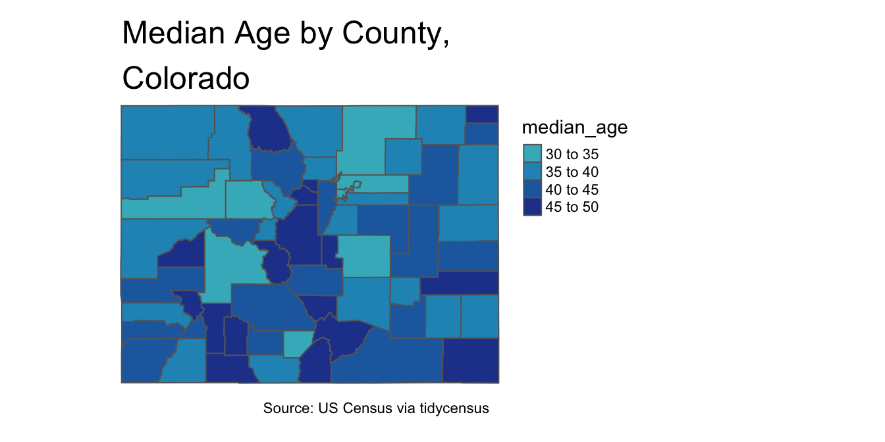

10 Exporting R Objects
10.1 Exporting a single object
10.1.1 Exporting a single dataset to disk as a CSV file
write_csv(state_population_2010, "state_population_2010.csv")Figure 10.1: ‘state_population_2010’ exported as CSV file to working directory
write_csv(state_population_2010, "/Users/adra7980/Documents/git_repositories/R_census/exported_objects/exported_datasets/state_population_2010.csv")
Figure 10.2: ‘state_population_2010’ exported as CSV file to dedicated directory named ’exported_datasets
10.1.2 Exporting a single map to disk as a png, jpeg, or PDF file with tmap_save
median_age_CO_map
tmap_save(median_age_CO_map, "median_age_CO_map.png")## Map saved to /Users/adra7980/Documents/git_repositories/R_census/median_age_CO_map.png## Resolution: 2448.944 by 1800.776 pixels## Size: 8.163147 by 6.002587 inches (300 dpi)
Figure 10.3: Colorado median age map exported to working directory as png file
tmap_save(median_age_CO_map, "/Users/adra7980/Documents/git_repositories/R_census/exported_objects/visualizations/median_age_CO_map.pdf")## Map saved to /Users/adra7980/Documents/git_repositories/R_census/exported_objects/visualizations/median_age_CO_map.pdf## Size: 8.152778 by 6 inches
Figure 10.4: Colorado median age map exported to dedicated directory as PDF file
10.1.3 Exporting a single ggplot visualization to disk as a png, jpeg, or PDF file with “ggsave”
median_age_CO_cleaned_visualization
ggsave("CO_median_age_graph.png", median_age_CO_cleaned_visualization)## Saving 7 x 5 in imageFigure 10.5: Colorado median age map graph exported to working directory as png file
ggsave("/Users/adra7980/Documents/git_repositories/R_census/exported_objects/visualizations/CO_median_age_graph.jpeg", median_age_CO_cleaned_visualization)## Saving 7 x 5 in imageFigure 10.6: Colorado median age map graph exported to dedicated directory as jpeg file
10.1.4 Exporting a single ggplot or tmap visualization with a graphics device
Exporting a single tmap visualization as a pdf file using a pdf device
pdf("/Users/adra7980/Documents/git_repositories/R_census/exported_objects/visualizations/CO_median_age_map.pdf")
median_age_CO_map
dev.off()## quartz_off_screen
## 2Exporting a single tmap visualization as a png file using a png device
png("/Users/adra7980/Documents/git_repositories/R_census/exported_objects/visualizations/CO_median_age_map.png")
median_age_CO_map
dev.off()## quartz_off_screen
## 2Exporting a single ggplot visualization as a jpeg file using a jpeg device
jpeg("/Users/adra7980/Documents/git_repositories/R_census/exported_objects/visualizations/CO_median_age_graph.jpeg")
median_age_CO_cleaned_visualization
dev.off()## quartz_off_screen
## 210.2 Exporting multiple objects
10.2.1 Exporting multiple csv files stored in a list
population_rural_2000_2010_list_cleaned## $`2000`
## # A tibble: 52 x 3
## GEOID NAME rural_pct_2000
## <chr> <chr> <dbl>
## 1 01 Alabama 44.6
## 2 02 Alaska 34.4
## 3 04 Arizona 11.8
## 4 05 Arkansas 47.5
## 5 06 California 5.56
## 6 08 Colorado 15.5
## 7 09 Connecticut 12.3
## 8 10 Delaware 19.9
## 9 11 District of Columbia 0
## 10 12 Florida 10.7
## # … with 42 more rows
##
## $`2010`
## # A tibble: 52 x 3
## GEOID NAME rural_pct_2010
## <chr> <chr> <dbl>
## 1 01 Alabama 41.0
## 2 02 Alaska 34.0
## 3 04 Arizona 10.2
## 4 05 Arkansas 43.8
## 5 06 California 5.05
## 6 22 Louisiana 26.8
## 7 21 Kentucky 41.6
## 8 08 Colorado 13.8
## 9 09 Connecticut 12.0
## 10 10 Delaware 16.7
## # … with 42 more rowswriteout_function<-function(object, filename){
setwd("/Users/adra7980/Documents/git_repositories/R_census/exported_objects/exported_datasets")
filename<-paste0(filename, ".csv")
write_csv(object, filename)
}
filename_vector<-paste0("rural_pct_", names(population_rural_2000_2010_list_cleaned))
filename_vector## [1] "rural_pct_2000" "rural_pct_2010"walk2(population_rural_2000_2010_list_cleaned, filename_vector,
writeout_function)
Figure 10.7: Rural pct by state, for 2000 and 2010, exported to dedicated directory as CSV files
10.2.2 Exporting multiple csv files stored as separate objects in the global environment
state_total_2010<-get_decennial(geography="state",
variables = "P001001",
year = 2010)## Getting data from the 2010 decennial Census## Using Census Summary File 1state_rural_2010<-get_decennial(geography = "state",
variables = "P002005",
year = 2010)## Getting data from the 2010 decennial Census
## Using Census Summary File 1# put objects to export in a named list
objects_to_export<-lst(state_total_2010, state_rural_2010)
# create filename vector
filename_vector<-names(objects_to_export)
# write out census datasets as CSV files
walk2(objects_to_export, filename_vector, writeout_function)Figure 10.8: ‘state_total_2010, and ’state_rural_2010’, exported to dedicated directory as CSV files
10.2.3 Using a graphics device to export multiple objects from a list into a single PDF file
Use PDF viewer to write out multiple tmap visualizations stored in a list to a single PDF file
pdf("/Users/adra7980/Documents/git_repositories/R_census/exported_objects/visualizations/age_maps.pdf")
county_age_maps_list## $NM##
## $UT##
## $AZ##
## $WYdev.off()## quartz_off_screen
## 2Use PDF viewer to write out multiple ggplot visualizations stored in a list to a single PDF file
pdf("/Users/adra7980/Documents/git_repositories/R_census/exported_objects/visualizations/age_graphs.pdf")
county_age_graphs_list## $NM##
## $UT##
## $AZ##
## $WYdev.off()## quartz_off_screen
## 2
Figure 10.9: All of the graphs in county_age_graphs_list written to a single PDF file, and all of the maps in county_age_maps_list written to a single PDF file; the displayed file is the first graph in county_age_graphs_list, depicting the median age in New Mexico counties
10.2.4 Writing out multiple “tmap” or “ggplot” objects as separate files
viz_save_general<-function(plot, filename, extension){
setwd("/Users/adra7980/Documents/git_repositories/R_census/exported_objects/visualizations")
filename_string<-paste0(filename, extension)
if(extension==".pdf"){
pdf(filename_string)
} else {
if (extension==".png"){
png(filename_string)
} else {
if (extension==".jpeg"){
jpeg(filename_string)
}
}
}
print(plot)
dev.off()
}# writes out tmap objects from "county_age_maps_list" as separate jpeg files
filenames<-paste0(names(county_age_maps_list), "_", "COUNTY_AGE_MAP")
inputlist<-list(county_age_maps_list, filenames, ".jpeg")
pwalk(inputlist, viz_save_general)
Figure 10.10: The four tmap elements in the county_age_maps_list, written out to a dedicated directory as separate jpeg files
If you want PDFs of the maps in ```county_age_maps_list", then…
# writes out tmap objects from "county_age_maps_list" as separate PDF files
filenames<-paste0(names(county_age_maps_list), "_", "COUNTY_AGE_MAP")
inputlist<-list(county_age_maps_list, filenames, ".pdf")
pwalk(inputlist, viz_save_general)
Figure 10.11: The four tmap elements in the county_age_maps_list, written out to a dedicated directory as separate PDF files
We can use the same function (viz_save_general) to write out ggplot objects as separate files with a specified file extension. For example, to write out the graphs in county_age_graphs_list as png files:
filenames<-paste0(names(county_age_graphs_list), "_", "COUNTY_AGE_GRAPH")
inputlist<-list(county_age_graphs_list, filenames, ".png")
pwalk(inputlist, viz_save_general)Figure 10.12: The four ggplot elements in the county_age_graphs_list, written out to a dedicated directory as separate png files
To write out the graphs in county_age_graphs_list as pdf or jpeg files, simply modify the file extensions:
# Writes out elements in "county_age_graphs_list" as separate pdf files
filenames<-paste0(names(county_age_graphs_list), "_", "COUNTY_AGE_GRAPH")
inputlist<-list(county_age_graphs_list, filenames, ".pdf")
pwalk(inputlist, viz_save_general)# Writes out elements in "county_age_graphs_list" as separate jpeg files
filenames<-paste0(names(county_age_graphs_list), "_", "COUNTY_AGE_GRAPH")
inputlist<-list(county_age_graphs_list, filenames, ".jpeg")
pwalk(inputlist, viz_save_general)